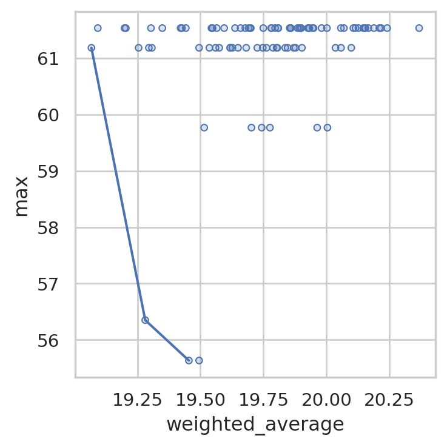
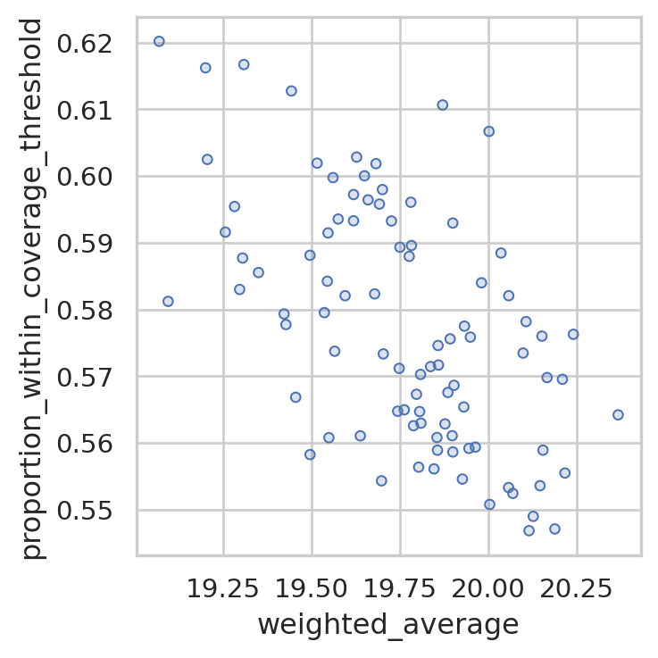
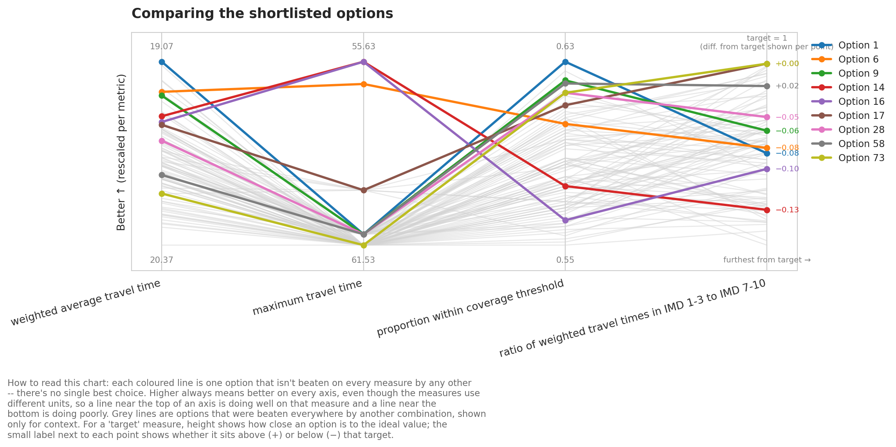
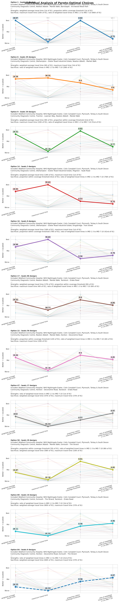
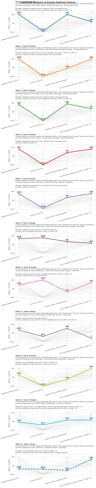
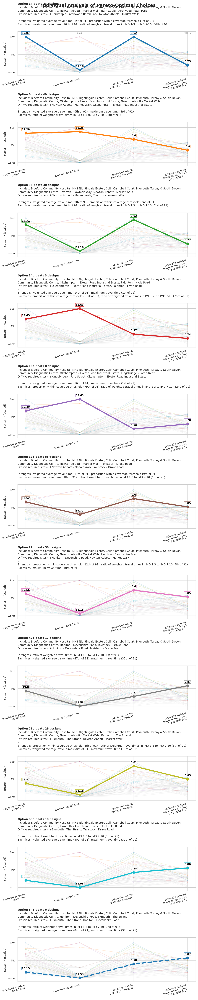
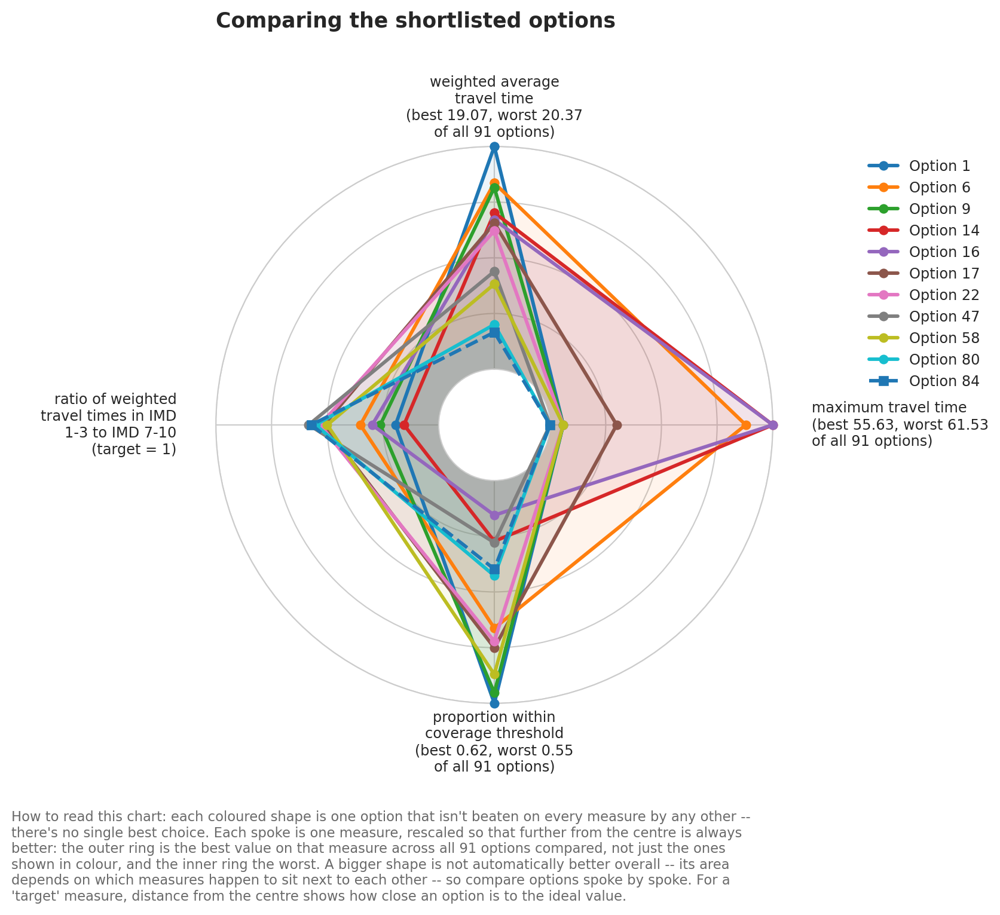
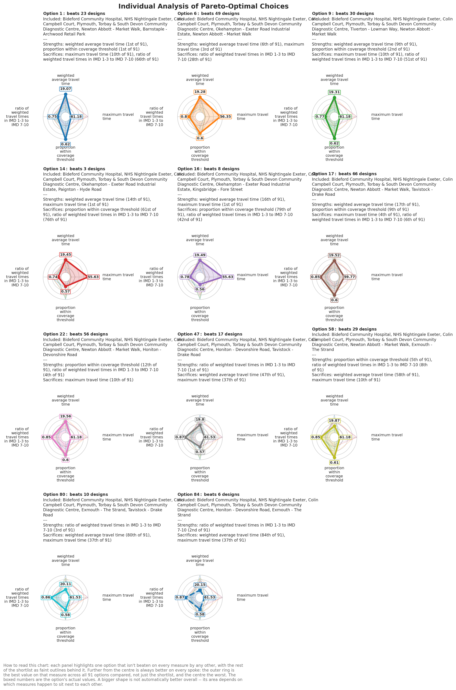
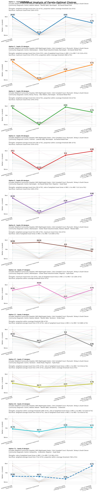

from lokigi.site import SiteProblem
from lokigi.multiobjective import MetricMultiobjective Optimisation with Pareto Fronts
When we want to optimize for multiple metrics, we can use a pareto front to pull out solutions that are good across multiple dimensions.
Let’s first imagine we’re just interested in weighted average travel time, and coverage, and we are trying to work out the best single option to select.
Hospital A gives a weighted average travel time of 30 minutes, with coverage of 40% of people being within 60 minutes.
Hospital B gives a weighted average travel time of 20 minutes, with coverage of 30% of people being within 60 minutes.
Hospital C gives a weighted average travel time of 40 minutes, with coverage of 50% of people being within 60 minutes.
Hospital D gives a weighted average travel time of 45 minutes and a coverage of 25%.
In pareto frontiers, we look at whether a solution is dominated by other options.
Hospital B is not dominated by hospital A, because hospital A has better coverage despite worse weighted average travel time.
Hospital B is not dominated by hospital C, because hospital C was worse travel time despite better coverage.
However, hospital D is worse in every respect than the other solutions; this is a dominated solution and so can be disregarded from our list.
Let’s first remind ourselves of pareto fronts when just looking at two metrics at a time.
problem = SiteProblem()
problem.add_sites(
"../../../sample_data/devon_cdcs.csv",
candidate_id_col="Facility_Name",
vertical_geometry_col="Latitude",
horizontal_geometry_col="Longitude",
required_sites_col="Existing"
)
problem.add_region_geometry_layer(
"../../../sample_data/LSOA_Devon_2021_EW_BSC_V4.gpkg",
common_col="LSOA21NM"
)
problem.add_travel_matrix(
travel_matrix_df="../../../sample_data/travel_matrix_car_devon_cdcs.csv",
source_col="from_id",
unit="minutes",
)
problem.add_demand(
"../../../sample_data/demand_MF_50_84.csv",
demand_col="Total",
location_id_col="LSOA 2021 Name"
)
problem.add_equity_data(
"../../../sample_data/devon_imd_2025_2021_LSOAs.csv",
equity_col="Index of Multiple Deprivation (IMD) Decile (where 1 is most deprived 10% of LSOA",
common_col="LSOA name (2021)",
label="IMD Decile (1 = most deprived)"
)Guessed CRS: EPSG:4326 (Values fall within longitude/latitude bounds)solution = problem.solve(p=6, objectives="p_median", threshold_for_coverage=20)solution.show_solutions()| solution_rank | site_names | site_indices | unselected_site_names | coverage_threshold | weighted_average | unweighted_average | 90th_percentile | max | weighted_average_for_ranking | ... | gap_relative_weighted | avg_lower_third_bins | avg_middle_third_bins | avg_upper_third_bins | inter_tertile_ratio | gap_absolute_description | gap_relative_description | inter_tertile_description | problem_df | additional_site_names | |
|---|---|---|---|---|---|---|---|---|---|---|---|---|---|---|---|---|---|---|---|---|---|
| 0 | 1 | [Bideford Community Hospital, NHS Nightingale ... | [0, 1, 2, 3, 8, 12] | [Tiverton - Lowman Way, Okehampton - Exeter Ro... | 20 | 19.07 | 18.81 | 38.69 | 61.18 | 19.07 | ... | 2.48 | 12.38 | 22.20 | 16.51 | 0.75 | Spread of 14.5 minutes between best and worst ... | Significant Disparity (Worst group travels 148... | Slightly Progressive (Most deprived travel 25%... | LSOA 2021 Name Bideford Community Hospi... | [Newton Abbott - Market Walk, Barnstaple - Arc... |
| 1 | 2 | [Bideford Community Hospital, NHS Nightingale ... | [0, 1, 2, 3, 5, 12] | [Tiverton - Lowman Way, Crediton - Lords Meado... | 20 | 19.09 | 19.01 | 34.43 | 61.53 | 19.09 | ... | 2.43 | 12.69 | 21.79 | 17.55 | 0.72 | Spread of 14.1 minutes between best and worst ... | Significant Disparity (Worst group travels 143... | Highly Progressive (Most deprived travel 28% s... | LSOA 2021 Name Bideford Community Hospi... | [Okehampton - Exeter Road Industrial Estate, B... |
| 2 | 3 | [Bideford Community Hospital, NHS Nightingale ... | [0, 1, 2, 3, 9, 12] | [Tiverton - Lowman Way, Okehampton - Exeter Ro... | 20 | 19.20 | 18.99 | 38.18 | 61.53 | 19.20 | ... | 2.46 | 12.74 | 22.11 | 17.01 | 0.75 | Spread of 14.3 minutes between best and worst ... | Significant Disparity (Worst group travels 146... | Highly Progressive (Most deprived travel 25% s... | LSOA 2021 Name Bideford Community Hospi... | [Bovey Tracey - Blue Waters, Barnstaple - Arch... |
| 3 | 4 | [Bideford Community Hospital, NHS Nightingale ... | [0, 1, 2, 3, 4, 12] | [Okehampton - Exeter Road Industrial Estate, C... | 20 | 19.20 | 19.08 | 38.11 | 61.53 | 19.20 | ... | 2.56 | 11.96 | 22.36 | 17.22 | 0.69 | Spread of 15.3 minutes between best and worst ... | Significant Disparity (Worst group travels 156... | Highly Progressive (Most deprived travel 31% s... | LSOA 2021 Name Bideford Community Hospi... | [Tiverton - Lowman Way, Barnstaple - Archwood ... |
| 4 | 5 | [Bideford Community Hospital, NHS Nightingale ... | [0, 1, 2, 3, 12, 17] | [Tiverton - Lowman Way, Okehampton - Exeter Ro... | 20 | 19.25 | 18.98 | 38.18 | 61.18 | 19.25 | ... | 2.76 | 11.92 | 22.33 | 17.28 | 0.69 | Spread of 15.4 minutes between best and worst ... | Significant Disparity (Worst group travels 176... | Highly Progressive (Most deprived travel 31% s... | LSOA 2021 Name Bideford Community Hospi... | [Barnstaple - Archwood Retail Park, Paignton -... |
| ... | ... | ... | ... | ... | ... | ... | ... | ... | ... | ... | ... | ... | ... | ... | ... | ... | ... | ... | ... | ... | ... |
| 86 | 87 | [Bideford Community Hospital, NHS Nightingale ... | [0, 1, 2, 3, 6, 16] | [Tiverton - Lowman Way, Okehampton - Exeter Ro... | 20 | 20.19 | 20.18 | 38.69 | 61.53 | 20.19 | ... | 2.24 | 13.44 | 23.34 | 17.96 | 0.75 | Spread of 14.3 minutes between best and worst ... | Significant Disparity (Worst group travels 124... | Highly Progressive (Most deprived travel 25% s... | LSOA 2021 Name Bideford Community Hospi... | [Crediton - Lords Meadow, Holsworthy - Underlane] |
| 87 | 88 | [Bideford Community Hospital, NHS Nightingale ... | [0, 1, 2, 3, 7, 11] | [Tiverton - Lowman Way, Okehampton - Exeter Ro... | 20 | 20.21 | 20.12 | 39.84 | 61.53 | 20.21 | ... | 2.32 | 13.92 | 23.34 | 17.14 | 0.81 | Spread of 14.8 minutes between best and worst ... | Significant Disparity (Worst group travels 132... | Slightly Progressive (Most deprived travel 19%... | LSOA 2021 Name Bideford Community Hospi... | [South Molton - Pathfields, Exmouth - The Strand] |
| 88 | 89 | [Bideford Community Hospital, NHS Nightingale ... | [0, 1, 2, 3, 15, 16] | [Tiverton - Lowman Way, Okehampton - Exeter Ro... | 20 | 20.22 | 20.15 | 38.48 | 61.53 | 20.22 | ... | 2.21 | 13.79 | 23.36 | 17.43 | 0.79 | Spread of 14.0 minutes between best and worst ... | Significant Disparity (Worst group travels 121... | Slightly Progressive (Most deprived travel 21%... | LSOA 2021 Name Bideford Community Hospi... | [Tavistock - Drake Road, Holsworthy - Underlane] |
| 89 | 90 | [Bideford Community Hospital, NHS Nightingale ... | [0, 1, 2, 3, 11, 13] | [Tiverton - Lowman Way, Okehampton - Exeter Ro... | 20 | 20.24 | 19.94 | 39.84 | 61.53 | 20.24 | ... | 2.50 | 13.19 | 23.64 | 16.96 | 0.78 | Spread of 15.5 minutes between best and worst ... | Significant Disparity (Worst group travels 150... | Slightly Progressive (Most deprived travel 22%... | LSOA 2021 Name Bideford Community Hospi... | [Exmouth - The Strand, Ilfracombe - Wilder Road] |
| 90 | 91 | [Bideford Community Hospital, NHS Nightingale ... | [0, 1, 2, 3, 11, 16] | [Tiverton - Lowman Way, Okehampton - Exeter Ro... | 20 | 20.37 | 20.27 | 39.84 | 61.53 | 20.37 | ... | 2.29 | 13.48 | 23.85 | 17.17 | 0.78 | Spread of 14.9 minutes between best and worst ... | Significant Disparity (Worst group travels 129... | Slightly Progressive (Most deprived travel 22%... | LSOA 2021 Name Bideford Community Hospi... | [Exmouth - The Strand, Holsworthy - Underlane] |
91 rows × 38 columns
Let’s recap all of the column names we have.
solution.show_solutions_colnames()Index(['solution_rank', 'site_names', 'site_indices', 'unselected_site_names',
'coverage_threshold', 'weighted_average', 'unweighted_average',
'90th_percentile', 'max', 'weighted_average_for_ranking',
'unweighted_average_for_ranking', 'max_for_ranking', 'total_cost',
'proportion_within_coverage_threshold',
'proportion_regions_within_coverage_threshold',
'demand_within_coverage_threshold', 'regions_within_coverage_threshold',
'regions_unreachable', 'demand_unreachable',
'proportion_demand_unreachable', 'weighted_by_equity_group',
'unweighted_by_equity_group', 'coverage_by_equity_group',
'coverage_regions_by_equity_group', 'max_cost_by_equity_group',
'regions_unreachable_by_equity_group',
'demand_unreachable_by_equity_group', 'gap_absolute_weighted',
'gap_relative_weighted', 'avg_lower_third_bins',
'avg_middle_third_bins', 'avg_upper_third_bins', 'inter_tertile_ratio',
'gap_absolute_description', 'gap_relative_description',
'inter_tertile_description', 'problem_df', 'additional_site_names'],
dtype='str')Let’s look at a couple of trade-offs.
In the plot below, the line indicates the pareto front - the non-dominated solutions.
solution.plot_simple_pareto_front_pairs(x_axis="weighted_average", y_axis="max")
We can see that there are three non-dominated solutions joined by this line:
- Weighted average travel time of 19.45, max travel time of 55.6 minutes
- Weighted average travel time of 19.28 (better), max travel time of 56.4 minutes (worse)
- Weighted average travel time of 19.1 (better again), max travel time of 61.2 minutes (worse again)
We can repeat this for another metric, like weighted average travel time against coverage.
Here, we can see that there is one single best solution in the top left corner - a coverage of 0.62, with a weighted average travel time of 19.07. Therefore, no pareto front is plotted.
solution.plot_simple_pareto_front_pairs(
x_axis="weighted_average",
y_axis="proportion_within_coverage_threshold",
maxx=False,
maxy=True
)
But often we will want to consider more metrics than just two.
When this is the case, we can use lokigi’s Metric to define a list of metrics we wish to consider.
metrics = [
Metric(column="weighted_average", direction="lower_better",
label="weighted average travel time", unit="minutes"),
Metric(column="max", direction="lower_better",
label="maximum travel time", unit="minutes"),
Metric(column="proportion_within_coverage_threshold", direction="higher_better",
label="proportion within coverage threshold"),
Metric(column="inter_tertile_ratio", direction="closest_to_target", target=1.0,
label = "ratio of weighted travel times in IMD 1-3 to IMD 7-10")
]We then pass these metrics in and can see that some new columns have been added to our solutions dataframe, identifying which solutions are considered ‘pareto optimal’ in any given cases.
solution.compute_pareto_front(
metrics=metrics
)
solution.show_solutions()[["solution_rank", "is_pareto_optimal", "dominated_by"]]| solution_rank | is_pareto_optimal | dominated_by | |
|---|---|---|---|
| 0 | 1 | True | [] |
| 1 | 2 | False | [1] |
| 2 | 3 | False | [1] |
| 3 | 4 | False | [1, 3] |
| 4 | 5 | False | [1] |
| ... | ... | ... | ... |
| 86 | 87 | False | [1, 3, 6, 8, 9, 10, 13, 16, 17, 18, 19, 20, 21... |
| 87 | 88 | False | [17, 22, 27, 34, 36, 38, 58, 73, 75, 79, 80, 8... |
| 88 | 89 | False | [6, 17, 20, 21, 22, 24, 25, 26, 27, 34, 36, 38... |
| 89 | 90 | False | [6, 17, 19, 20, 22, 24, 25, 26, 27, 34, 36, 38... |
| 90 | 91 | False | [6, 17, 19, 20, 22, 24, 25, 26, 27, 34, 36, 38... |
91 rows × 3 columns
The pareto_summary() method returns only solutions that are non-dominated.
solution.pareto_summary()| solution_rank | weighted_average | max | proportion_within_coverage_threshold | inter_tertile_ratio | |
|---|---|---|---|---|---|
| 0 | 1 | 19.067738 | 61.183334 | 0.620176 | 0.750000 |
| 1 | 6 | 19.281145 | 56.350000 | 0.595434 | 0.798980 |
| 2 | 9 | 19.307562 | 61.183334 | 0.616704 | 0.771309 |
| 3 | 14 | 19.454259 | 55.633335 | 0.566852 | 0.738274 |
| 4 | 16 | 19.494915 | 55.633335 | 0.558261 | 0.782480 |
| 5 | 17 | 19.515019 | 59.766666 | 0.601931 | 0.849541 |
| 6 | 22 | 19.559990 | 61.183334 | 0.599759 | 0.854872 |
| 7 | 47 | 19.796241 | 61.533333 | 0.567293 | 0.870870 |
| 8 | 58 | 19.870268 | 61.183334 | 0.610648 | 0.845038 |
| 9 | 80 | 20.106519 | 61.533333 | 0.578182 | 0.861504 |
| 10 | 84 | 20.151490 | 61.533333 | 0.576010 | 0.867117 |
By default, it only returns the metrics of interest, but we can opt to return all.
solution.pareto_summary(return_full_df=True)| solution_rank | site_names | site_indices | unselected_site_names | coverage_threshold | weighted_average | unweighted_average | 90th_percentile | max | weighted_average_for_ranking | ... | avg_middle_third_bins | avg_upper_third_bins | inter_tertile_ratio | gap_absolute_description | gap_relative_description | inter_tertile_description | problem_df | additional_site_names | is_pareto_optimal | dominated_by | |
|---|---|---|---|---|---|---|---|---|---|---|---|---|---|---|---|---|---|---|---|---|---|
| 0 | 1 | [Bideford Community Hospital, NHS Nightingale ... | [0, 1, 2, 3, 8, 12] | [Tiverton - Lowman Way, Okehampton - Exeter Ro... | 20 | 19.067738 | 18.811545 | 38.690000 | 61.183334 | 19.067738 | ... | 22.2025 | 16.506667 | 0.750000 | Spread of 14.5 minutes between best and worst ... | Significant Disparity (Worst group travels 148... | Slightly Progressive (Most deprived travel 25%... | LSOA 2021 Name Bideford Community Hospi... | [Newton Abbott - Market Walk, Barnstaple - Arc... | True | [] |
| 1 | 6 | [Bideford Community Hospital, NHS Nightingale ... | [0, 1, 2, 3, 5, 8] | [Tiverton - Lowman Way, Crediton - Lords Meado... | 20 | 19.281145 | 19.176315 | 36.410000 | 56.350000 | 19.281145 | ... | 22.0725 | 16.996667 | 0.798980 | Spread of 12.0 minutes between best and worst ... | Significant Disparity (Worst group travels 104... | Slightly Progressive (Most deprived travel 20%... | LSOA 2021 Name Bideford Community Hospi... | [Okehampton - Exeter Road Industrial Estate, N... | True | [] |
| 2 | 9 | [Bideford Community Hospital, NHS Nightingale ... | [0, 1, 2, 3, 4, 8] | [Okehampton - Exeter Road Industrial Estate, C... | 20 | 19.307562 | 19.178669 | 40.630000 | 61.183334 | 19.307562 | ... | 22.5100 | 16.660000 | 0.771309 | Spread of 13.2 minutes between best and worst ... | Significant Disparity (Worst group travels 114... | Slightly Progressive (Most deprived travel 23%... | LSOA 2021 Name Bideford Community Hospi... | [Tiverton - Lowman Way, Newton Abbott - Market... | True | [] |
| 3 | 14 | [Bideford Community Hospital, NHS Nightingale ... | [0, 1, 2, 3, 5, 17] | [Tiverton - Lowman Way, Crediton - Lords Meado... | 20 | 19.454259 | 19.327115 | 35.893332 | 55.633335 | 19.454259 | ... | 22.1700 | 17.766667 | 0.738274 | Spread of 12.7 minutes between best and worst ... | Significant Disparity (Worst group travels 122... | Highly Progressive (Most deprived travel 26% s... | LSOA 2021 Name Bideford Community Hospi... | [Okehampton - Exeter Road Industrial Estate, P... | True | [] |
| 4 | 16 | [Bideford Community Hospital, NHS Nightingale ... | [0, 1, 2, 3, 5, 14] | [Tiverton - Lowman Way, Crediton - Lords Meado... | 20 | 19.494915 | 19.554390 | 34.653334 | 55.633335 | 19.494915 | ... | 21.6625 | 18.036667 | 0.782480 | Spread of 11.4 minutes between best and worst ... | Significant Disparity (Worst group travels 98%... | Slightly Progressive (Most deprived travel 22%... | LSOA 2021 Name Bideford Community Hospi... | [Okehampton - Exeter Road Industrial Estate, K... | True | [] |
| 5 | 17 | [Bideford Community Hospital, NHS Nightingale ... | [0, 1, 2, 3, 8, 15] | [Tiverton - Lowman Way, Okehampton - Exeter Ro... | 20 | 19.515019 | 19.324166 | 39.430001 | 59.766666 | 19.515019 | ... | 22.4625 | 16.350000 | 0.849541 | Spread of 12.4 minutes between best and worst ... | Significant Disparity (Worst group travels 107... | Slightly Progressive (Most deprived travel 15%... | LSOA 2021 Name Bideford Community Hospi... | [Newton Abbott - Market Walk, Tavistock - Drak... | True | [] |
| 6 | 22 | [Bideford Community Hospital, NHS Nightingale ... | [0, 1, 2, 3, 8, 10] | [Tiverton - Lowman Way, Okehampton - Exeter Ro... | 20 | 19.559990 | 19.294490 | 39.283334 | 61.183334 | 19.559990 | ... | 22.6475 | 16.146667 | 0.854872 | Spread of 13.6 minutes between best and worst ... | Significant Disparity (Worst group travels 118... | Slightly Progressive (Most deprived travel 15%... | LSOA 2021 Name Bideford Community Hospi... | [Newton Abbott - Market Walk, Honiton - Devons... | True | [] |
| 7 | 47 | [Bideford Community Hospital, NHS Nightingale ... | [0, 1, 2, 3, 10, 15] | [Tiverton - Lowman Way, Okehampton - Exeter Ro... | 20 | 19.796241 | 19.627709 | 35.893332 | 61.533333 | 19.796241 | ... | 22.5925 | 16.546667 | 0.870870 | Spread of 12.7 minutes between best and worst ... | Significant Disparity (Worst group travels 110... | Slightly Progressive (Most deprived travel 13%... | LSOA 2021 Name Bideford Community Hospi... | [Honiton - Devonshire Road, Tavistock - Drake ... | True | [] |
| 8 | 58 | [Bideford Community Hospital, NHS Nightingale ... | [0, 1, 2, 3, 8, 11] | [Tiverton - Lowman Way, Okehampton - Exeter Ro... | 20 | 19.870268 | 19.635940 | 42.073333 | 61.183334 | 19.870268 | ... | 23.2750 | 16.090000 | 0.845038 | Spread of 13.6 minutes between best and worst ... | Significant Disparity (Worst group travels 118... | Slightly Progressive (Most deprived travel 15%... | LSOA 2021 Name Bideford Community Hospi... | [Newton Abbott - Market Walk, Exmouth - The St... | True | [] |
| 9 | 80 | [Bideford Community Hospital, NHS Nightingale ... | [0, 1, 2, 3, 11, 15] | [Tiverton - Lowman Way, Okehampton - Exeter Ro... | 20 | 20.106519 | 19.969159 | 39.940001 | 61.533333 | 20.106519 | ... | 23.2200 | 16.486667 | 0.861504 | Spread of 13.6 minutes between best and worst ... | Significant Disparity (Worst group travels 118... | Slightly Progressive (Most deprived travel 14%... | LSOA 2021 Name Bideford Community Hospi... | [Exmouth - The Strand, Tavistock - Drake Road] | True | [] |
| 10 | 84 | [Bideford Community Hospital, NHS Nightingale ... | [0, 1, 2, 3, 10, 11] | [Tiverton - Lowman Way, Okehampton - Exeter Ro... | 20 | 20.151490 | 19.939483 | 39.440001 | 61.533333 | 20.151490 | ... | 23.4050 | 16.280000 | 0.867117 | Spread of 13.9 minutes between best and worst ... | Significant Disparity (Worst group travels 121... | Slightly Progressive (Most deprived travel 13%... | LSOA 2021 Name Bideford Community Hospi... | [Honiton - Devonshire Road, Exmouth - The Strand] | True | [] |
11 rows × 40 columns
We can also look at the tradeoffs of each solution compared to the winner for weighted average.
solution.describe_tradeoffs()['Solution 6 vs solution 1: costs weighted average travel time by 0.21; improves maximum travel time by 4.83; costs proportion within coverage threshold by 0.02; improves ratio of weighted travel times in imd 1-3 to imd 7-10 by 0.05',
'Solution 9 vs solution 1: costs weighted average travel time by 0.24; costs proportion within coverage threshold by 0.00; improves ratio of weighted travel times in imd 1-3 to imd 7-10 by 0.02',
'Solution 14 vs solution 1: costs weighted average travel time by 0.39; improves maximum travel time by 5.55; costs proportion within coverage threshold by 0.05; costs ratio of weighted travel times in imd 1-3 to imd 7-10 by 0.01',
'Solution 16 vs solution 1: costs weighted average travel time by 0.43; improves maximum travel time by 5.55; costs proportion within coverage threshold by 0.06; improves ratio of weighted travel times in imd 1-3 to imd 7-10 by 0.03',
'Solution 17 vs solution 1: costs weighted average travel time by 0.45; improves maximum travel time by 1.42; costs proportion within coverage threshold by 0.02; improves ratio of weighted travel times in imd 1-3 to imd 7-10 by 0.10',
'Solution 22 vs solution 1: costs weighted average travel time by 0.49; costs proportion within coverage threshold by 0.02; improves ratio of weighted travel times in imd 1-3 to imd 7-10 by 0.10',
'Solution 47 vs solution 1: costs weighted average travel time by 0.73; costs maximum travel time by 0.35; costs proportion within coverage threshold by 0.05; improves ratio of weighted travel times in imd 1-3 to imd 7-10 by 0.12',
'Solution 58 vs solution 1: costs weighted average travel time by 0.80; costs proportion within coverage threshold by 0.01; improves ratio of weighted travel times in imd 1-3 to imd 7-10 by 0.10',
'Solution 80 vs solution 1: costs weighted average travel time by 1.04; costs maximum travel time by 0.35; costs proportion within coverage threshold by 0.04; improves ratio of weighted travel times in imd 1-3 to imd 7-10 by 0.11',
'Solution 84 vs solution 1: costs weighted average travel time by 1.08; costs maximum travel time by 0.35; costs proportion within coverage threshold by 0.04; improves ratio of weighted travel times in imd 1-3 to imd 7-10 by 0.12']We can opt for a more stakeholder-focussed output, which is returned as a list of markdown strings for easy inclusion in a Quarto report or Streamlit frontend.
solution.describe_tradeoffs_for_stakeholders()['We found 11 genuinely different options -- each one is the best choice on at least one measure, so no single option wins on everything. The trade-offs are between weighted average travel time, maximum travel time, proportion within coverage threshold, ratio of weighted travel times in imd 1-3 to imd 7-10.',
'**Option 6** (compared with Option 1)\n- Gains: maximum travel time improves by 4.8 minutes; ratio of weighted travel times in IMD 1-3 to IMD 7-10 improves by 0.0\n- Costs: weighted average travel time is 0.2 minutes worse; proportion within coverage threshold is 0.0 worse',
'**Option 9** (compared with Option 1)\n- Gains: ratio of weighted travel times in IMD 1-3 to IMD 7-10 improves by 0.0\n- Costs: weighted average travel time is 0.2 minutes worse; proportion within coverage threshold is 0.0 worse',
'**Option 14** (compared with Option 1)\n- Gains: maximum travel time improves by 5.5 minutes\n- Costs: weighted average travel time is 0.4 minutes worse; proportion within coverage threshold is 0.1 worse; ratio of weighted travel times in IMD 1-3 to IMD 7-10 is 0.0 worse',
'**Option 16** (compared with Option 1)\n- Gains: maximum travel time improves by 5.5 minutes; ratio of weighted travel times in IMD 1-3 to IMD 7-10 improves by 0.0\n- Costs: weighted average travel time is 0.4 minutes worse; proportion within coverage threshold is 0.1 worse',
'**Option 17** (compared with Option 1)\n- Gains: maximum travel time improves by 1.4 minutes; ratio of weighted travel times in IMD 1-3 to IMD 7-10 improves by 0.1\n- Costs: weighted average travel time is 0.4 minutes worse; proportion within coverage threshold is 0.0 worse',
'**Option 22** (compared with Option 1)\n- Gains: ratio of weighted travel times in IMD 1-3 to IMD 7-10 improves by 0.1\n- Costs: weighted average travel time is 0.5 minutes worse; proportion within coverage threshold is 0.0 worse',
'**Option 47** (compared with Option 1)\n- Gains: ratio of weighted travel times in IMD 1-3 to IMD 7-10 improves by 0.1\n- Costs: weighted average travel time is 0.7 minutes worse; maximum travel time is 0.3 minutes worse; proportion within coverage threshold is 0.1 worse',
'**Option 58** (compared with Option 1)\n- Gains: ratio of weighted travel times in IMD 1-3 to IMD 7-10 improves by 0.1\n- Costs: weighted average travel time is 0.8 minutes worse; proportion within coverage threshold is 0.0 worse',
'**Option 80** (compared with Option 1)\n- Gains: ratio of weighted travel times in IMD 1-3 to IMD 7-10 improves by 0.1\n- Costs: weighted average travel time is 1.0 minutes worse; maximum travel time is 0.3 minutes worse; proportion within coverage threshold is 0.0 worse',
'**Option 84** (compared with Option 1)\n- Gains: ratio of weighted travel times in IMD 1-3 to IMD 7-10 improves by 0.1\n- Costs: weighted average travel time is 1.1 minutes worse; maximum travel time is 0.3 minutes worse; proportion within coverage threshold is 0.0 worse']Advanced Pareto Plots
When we are looking at more than 2 metrics, the pareto plots from before stop being so useful for interpretation.
Instead, we can use plot_pareto_summary.
This plots every non-dominated solution as a coloured line. Grey lines indicate other solutions to give context for the range of values of each metric.
Metrics are scaled in such a way that values further up the axis will always be better, even if that means flipping the direction.
For example, we have the shortest travel time (a smaller number) at the top, but the best coverage (a higher number) both appearing as the points at the top of the graph. So to interpret, we can just read it as values further up the y axis being better, and values further down being worse. This is also true for values that are aiming for a target - for example, for the IMD travel ratio, in this case we want it to be close to 1 (i.e. minimal difference between travel times across the upper and lower three deciles), so the values at the top are those that are closest to 1, and the values further down are those that are higher or lower than 1, with the direction being shown in the labels.
solution.plot_pareto_summary(width_multiplier=3);
Interactive version
Pass interactive=True for a Plotly version of the same chart. Hover over a point on a line to see its raw value, its rank and the sites that make up that option, or anywhere along the line to see the option and its sites. Click a legend entry to hide an option, or double-click one to show it on its own.
solution.plot_pareto_summary(interactive=True)A few options make a busy chart easier to read. initially_shown chooses which options are visible when the chart first opens ("first", or a list of option ids such as [1, 17]); the rest start greyed out in the legend, one click from being shown. legend_wrap_at wraps long legend labels, which matters once diff_against lists the sites that differ. scale_to="pareto_front" scales each axis over just the Pareto-optimal options rather than every option compared, which stretches them across the whole axis so the differences between them are easier to see (the axis labels say which is used). The same three options work on plot_pareto_radar().
solution.plot_pareto_summary(
interactive=True,
diff_against="default",
legend_wrap_at=25,
initially_shown=[1, 17],
scale_to="pareto_front",
)We can also use faceted plots to help investigate solutions in more detail. This can help us to understand the tradeoffs in more detail.
solution.plot_pareto_facets();
Both of the plots above label each option only as “Option 1”, “Option 2”, etc. diff_against adds a compact site-name diff to those labels, so it’s immediately clear what actually changes between trade-off options rather than just how they score. This problem has Existing sites flagged via required_sites_col, so diff_against="default" compares each option against those – “what’s new beyond what we already have”.
solution.plot_pareto_summary(width_multiplier=3, diff_against="default");
solution.plot_pareto_facets(diff_against="default");
Radar charts
The same comparison can be drawn as a radar (spider) chart with plot_pareto_radar(). It shows exactly the same data as plot_pareto_summary(), wrapped into a circle: every spoke is rescaled so that further from the centre is always better, which makes “a bigger shape is doing well” easy for stakeholders to pick up.
One caution: a shape’s area depends on which metrics happen to sit next to each other. Reordering the metrics list would change which option looks biggest without changing a single value, so compare options spoke by spoke rather than by overall size.
solution.plot_pareto_radar();
Overlapping shapes get hard to tell apart as the number of options grows, so the faceted version, plot_pareto_radar_facets(), is often the better choice for a report: one panel per option, with the same strengths and sacrifices summary as plot_pareto_facets().
solution.plot_pareto_radar_facets();
Pass interactive=True for a Plotly version. Hover over a point to see its raw value and rank, or anywhere inside a shape to see the sites that make up that option. Where shapes overlap, the hover names the smallest one under the cursor. Click a legend entry to hide that option, or double-click one to show it on its own.
solution.plot_pareto_radar(interactive=True)With many options the overlay is a tangle, so initially_shown controls which are visible when the chart first opens. "first" starts with just the first option; the rest are greyed out in the legend, one click from being shown. You can also pass a list of option ids, e.g. initially_shown=[1, 17], to open on a pre-selected shortlist.
solution.plot_pareto_radar(interactive=True, initially_shown="first")By default each spoke is scaled over every option compared, dominated ones included: the outer ring is the best value seen anywhere, and the centre the worst. That shows how good the Pareto-optimal options are against everything that was evaluated. scale_to="pareto_front" scales over just the Pareto-optimal options instead, stretching them across the whole spoke so the differences between them are easier to see, at the cost of saying nothing about how they compare with the rest. The spoke labels, hover ranks and caption all say which set is used.
Here the two barely differ – the best option on each measure is Pareto-optimal either way, and the worst weighted average travel time moves from 20.37 to 20.15 – because the front already spans most of the range. The option matters more when the front covers only a narrow slice of what was evaluated. It works the same way on plot_pareto_radar_facets() and plot_pareto_summary().
solution.plot_pareto_radar(interactive=True, scale_to="pareto_front")Adjusting metrics
Let’s imagine that rather than wanting to make the inter_tertile ratio as equal as possible, we instead want to prioritise access in the most deprived areas. We simply change the direction to lower_better.
metrics = [
Metric(column="weighted_average", direction="lower_better",
label="weighted average travel time", unit="minutes"),
Metric(column="max", direction="lower_better",
label="maximum travel time", unit="minutes"),
Metric(column="proportion_within_coverage_threshold", direction="higher_better",
label="proportion within coverage threshold"),
Metric(column="inter_tertile_ratio", direction="lower_better",
label = "ratio of weighted travel times in IMD 1-3 to IMD 7-10"),
# Metric(column="avg_lower_third_bins", direction="lower_better",
# label = "Weighted travel times in IMD 1-3")
]Then we can just recompute our pareto front, which will overwrite the relevant flags in the solution dataframe.
solution.compute_pareto_front(
metrics=metrics
)Then we can recreate any required plots.
solution.plot_pareto_facets();
solution.pareto_summary(return_full_df=True)[[
"solution_rank", "inter_tertile_ratio", "inter_tertile_ratio",
"avg_lower_third_bins", "avg_upper_third_bins"
]].round(2)| solution_rank | inter_tertile_ratio | inter_tertile_ratio | avg_lower_third_bins | avg_upper_third_bins | |
|---|---|---|---|---|---|
| 0 | 1 | 0.75 | 0.75 | 12.38 | 16.51 |
| 1 | 2 | 0.72 | 0.72 | 12.69 | 17.55 |
| 2 | 3 | 0.75 | 0.75 | 12.74 | 17.01 |
| 3 | 4 | 0.69 | 0.69 | 11.96 | 17.22 |
| 4 | 5 | 0.69 | 0.69 | 11.92 | 17.28 |
| 5 | 6 | 0.80 | 0.80 | 13.58 | 17.00 |
| 6 | 14 | 0.74 | 0.74 | 13.12 | 17.77 |
| 7 | 17 | 0.85 | 0.85 | 13.89 | 16.35 |
| 8 | 37 | 0.78 | 0.78 | 13.43 | 17.12 |
| 9 | 43 | 0.77 | 0.77 | 13.16 | 17.04 |
| 10 | 71 | 0.71 | 0.71 | 12.70 | 17.81 |